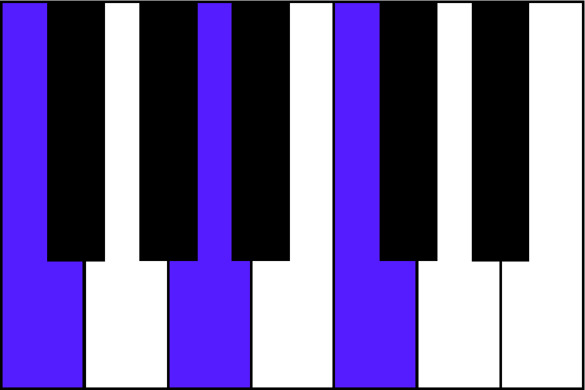
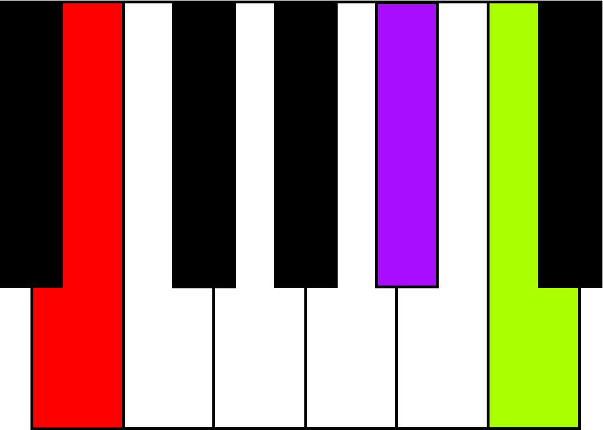
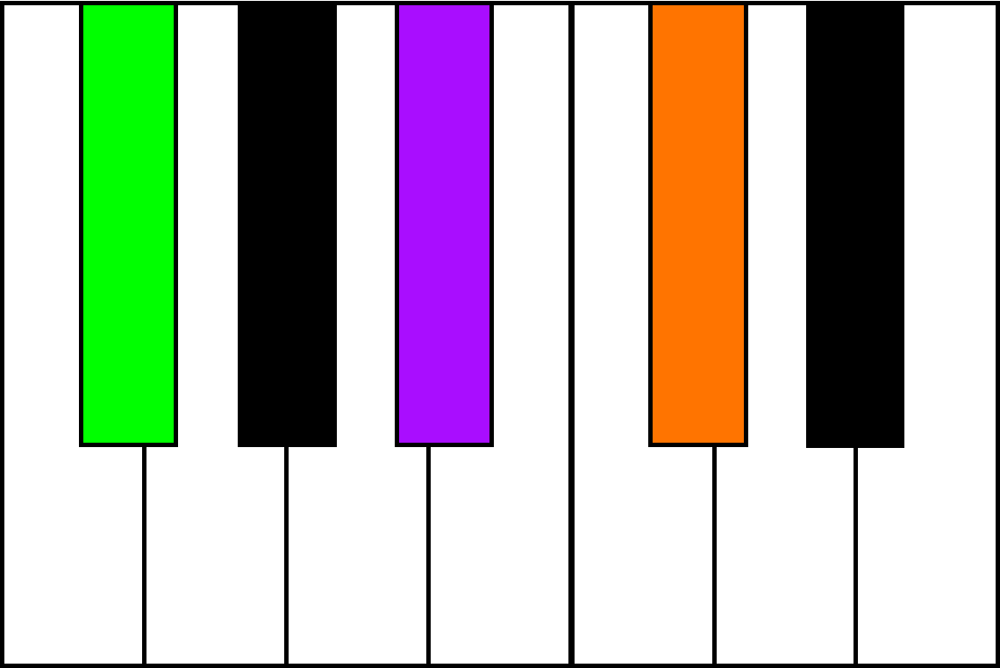
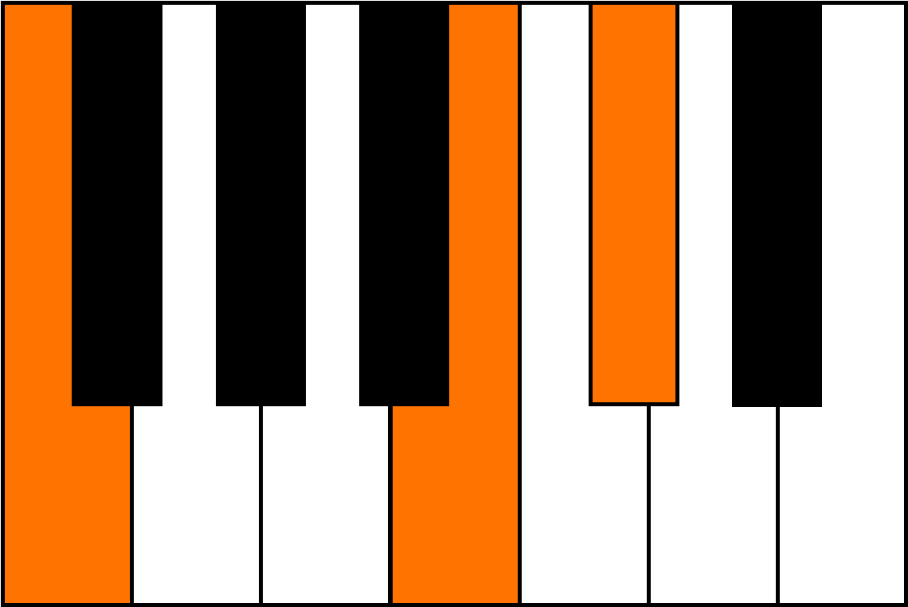

4 Note Songs
These songs add the fifth note of the major scale (sol) to those learned in the 3 note songs.
Melodic Features
All of these songs are in major, but can easily be changed to minor by instructing the student to play the third note one half step lower. There are equal numbers of songs in duple and triple meters. They are notated using 1-octave, color-coded keyboard diagrams.
Harmonic Features
These songs use only the tonic (I) and dominant-seventh (V7) chords. If your student learned the 3 note songs first, they should be ready to play the full tonic chord, and a three note (third-seventh-root) dominant-seventh.
I

white key tonic
V7

white key dominant
I

black key tonic
V7

black key dominant